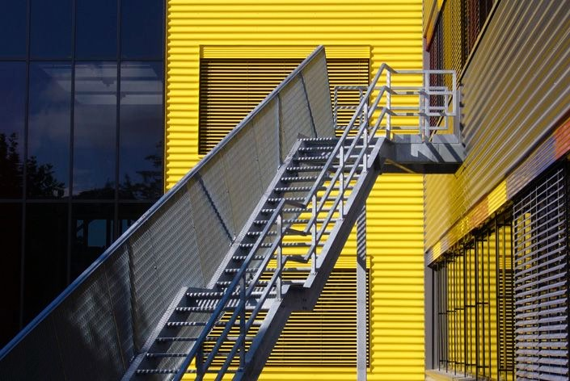

Études
Bachelor HES Media and Interaction Design, écal
2008
Mes études à l’écal mon mené à explorer les interfaces utilisateur tangibles par le biais d’un stage au Media Lab à l’EPFL. J’ai eu en parallèle l'occasion de réaliser mon travail de Bachelor sur une table interactive multi-touch.